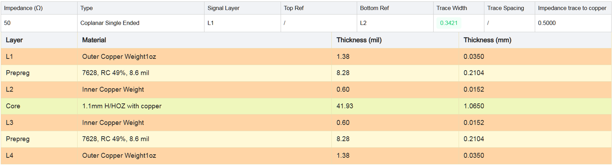
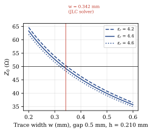
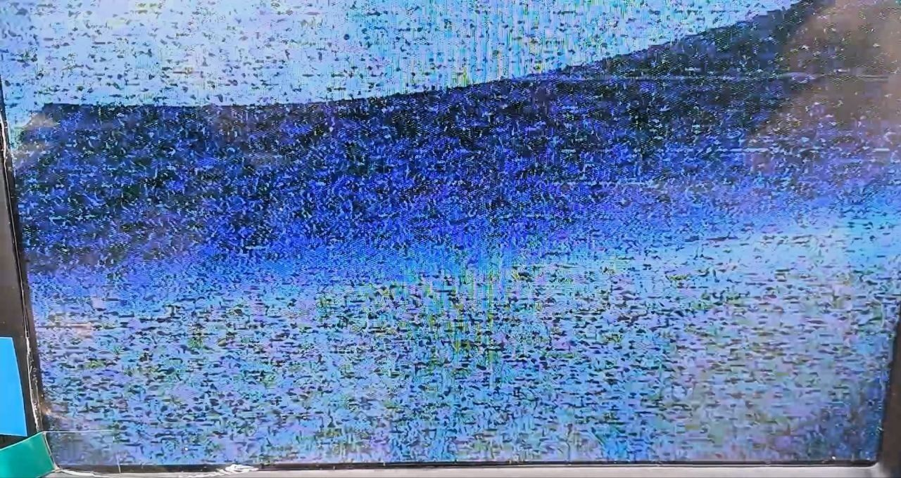
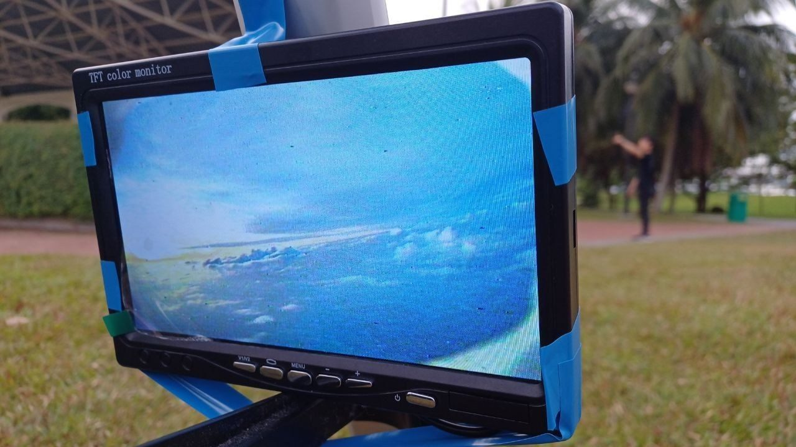
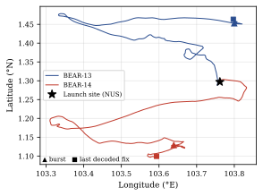
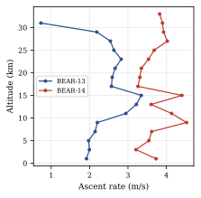
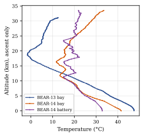
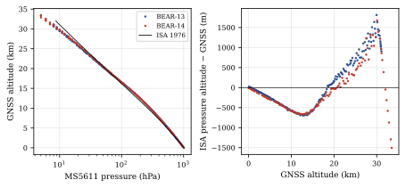

0Summary
BEAR-13 (Project Strato TV) carried a 1.5 W analogue video transmitter at 1280 MHz alongside my communications board: a four-layer ESP32 board with a 144.39 MHz APRS transmitter, u-blox M10 GNSS, an MS5611 barometer and controlled-impedance RF routing. It flew on 29 March 2026 (local), reached 31.1 km, and the APRS network recovered 96.9% of its frames.
The GNSS kept lock throughout with a 1.5 W, 1.28 GHz transmitter a few centimetres away, so the RF coexistence design held. The video degraded at about 39 km slant range and died at about 46 km. A corrected link budget puts the carrier-to-noise ratio through the FM threshold at exactly that range. The pre-flight estimate had the free-space loss 11.6 dB too optimistic and treated a 20 MHz FM signal like a narrowband carrier. Nothing beyond link margin is needed to explain the loss.
1Mission
1.1Concept of operations
The payload sends APRS position and housekeeping telemetry on 144.390 MHz every 30 s, relayed by the terrestrial digipeater and iGate network so tracking extends well beyond line of sight [3]. In parallel the VTx transmits live video at 1280 MHz, switching between a horizon and a zenith camera on every APRS cycle, to a tracking antenna on the ground. Termination is set at 30 km, and the zenith camera is selected for five minutes before the cut.1
1.2Why 1280 MHz, and why analogue
Analogue FPV transmitters are cheap (about $60) because drones use them: an NTSC/PAL video signal frequency-modulates a carrier. The catch is bandwidth, about 20 MHz. That doesn't fit anywhere in the VHF or UHF amateur bands, but the 1240–1300 MHz band has 40 MHz of room, subject to IMDA approval. The alternative is digital TV from an SDR in about 2 MHz, which is how the Horus DATV flights do it [8]. That costs far more in hardware, so we went through the regulators instead.2
| Launch | 28 Mar 2026, 22:51 UTC (29 Mar, 06:51 local) |
| Callsign | 9V1WP-11 |
| Primary payload | 1.28 GHz analogue FPV video, two cameras |
| Avionics | Comms board + battery management board (A. Tan) + drone PDB |
| Battery | 3S Li-Po, 5200 mAh |
| Peak GNSS altitude | 31 093 m |
| APRS frames recovered | 96.9% (370/382) |
2Payload
FIG. 1 is the BEAR-13 payload. My comms board handles telemetry, GNSS, cutter logic, camera switching and VTx enable. A drone PDB makes the 5 V and 12 V rails. Alvin Tan's battery management board sits between the 3S pack and everything else.
The battery management board carries two PTC heaters with a one-wire temperature sensor, kicking in at 15 °C to protect capacity, plus a heater MOSFET, the payload-cut MOSFET, and current sensing reported to the comms board over I²C.3 On the ground, Nathan Bong's rotator tracks the balloon from aprs.fi positions. It drives a repurposed Celestron telescope mount through Hamlib, which keeps the high-gain antenna on a payload whose wideband signal has a low power spectral density.

3Communications board
3.1Overview
The board is 75 × 55 mm, four layers, 107 footprints and 426 vias, built around an ESP32-WROOM-32E. It carries an SA818-family (DRA818V-compatible) VHF FM transceiver, a u-blox M10 GNSS receiver, an MS5611-01BA barometer rated to about 25 km, a BMM350 magnetometer with an IMU, a MAX31855 type-K thermocouple interface, a DC-bias circuit for decoding received audio, and a TCAN1044 CAN transceiver reserved for future stack expansion [1]. Two schematic sheets are in Appendix A.
3.2RF front ends and impedance control
Two RF paths share the board with a 1.5 W, 1280 MHz transmitter a few centimetres away. Coexistence drove the layout:
- GNSS receive. A Mini-Circuits BFCN-1575+ ceramic band-pass filter ahead of the patch antenna input rejects the 1.28 GHz VTx carrier.
- VHF transmit. A Mini-Circuits LCFN-160+ low-pass filter at the transceiver output suppresses harmonics of the 144.39 MHz carrier.
- Controlled impedance. Both paths are coplanar waveguide with ground (CPWG) on the top layer over an unbroken L2 ground, with no solder mask over the traces and a via fence along both sides.
- Low-frequency filtering. Supply and data lines to the radio and sensors pass through 220 Ω @ 100 MHz ferrite beads (BLM21PG221) and common-mode chokes, low-pass below 100 MHz, so 144.39 MHz transmit energy stays out of the logic supply. GPIO-only lines (PTT, power, squelch) are left unfiltered on purpose.
I took the electrical properties of JLC's 7628 stack-up (0.2104 mm of 7628 prepreg between L1 and L2) and tuned the trace geometry in KiCad. The vendor's impedance solver gives a 0.342 mm trace with a 0.5 mm gap for 50 Ω (FIG. 2a). As an independent check, the conformal-mapping closed form for CPWG [5, 6] was evaluated with a thickness correction for 35 µm copper:
where \(K(\cdot)\) is the complete elliptic integral of the first kind and \(k'=\sqrt{1-k^2}\). For \(\varepsilon_r = 4.2\text{–}4.6\) the trace gives \(Z_0 = 48.3\text{–}50.3\,\Omega\) (FIG. 2b), inside the ±10% fabrication tolerance of the solver result. The ground stitching vias were spaced at λ/8 of the VTx frequency.4




3.3Antenna
The VHF antenna is a half-wave dipole made from coax and enamelled copper wire, integrated into the payload with a generous amount of hot glue. A VNA measurement through an MMCX–SMA adaptor gave VSWR ≈ 1.67: 12 dB return loss and 0.52 dB of mismatch loss.5
3.4Fabrication
JLCPCB assembled the board, and X-ray inspection confirmed the solder joints on the GNSS module.6 One schematic error made it to hardware: I routed an input-only ESP32 pin to an output function, so it needed a bodge wire. The schematic now records the as-built assignment (VTx enable on GPIO5, cutter on GPIO4).
4Flight firmware
4.1Execution model
The firmware is a cooperative super-loop with millis() software timers and no RTOS [2]. GNSS is polled at 1 Hz, the barometer and temperatures every 2 s, and the cutter altitude check every 1.5 s. Transmissions follow the state machine in FIG. 3. Sensor updates are gated to Idle, so heavy transmit current never coincides with sensor reads and GPIO switching.

4.2Telemetry format
Each APRS frame carries a six-digit frame counter, TxC or TxD, then one of the two housekeeping pages in FIG. 3. The counter increments on every transmission, so gaps between received counters count lost frames exactly (§6.5). On BEAR-13 the second field of page C was reserved for an external thermocouple (E:) and read zero.
4.3GNSS assistance and Wi-Fi
At power-on the board joins a local Wi-Fi network, downloads u-blox AssistNow data and seeds the receiver with an approximate position, then shuts Wi-Fi down. If the board reboots above 1 km, Wi-Fi stays off so it can't boot-loop. One side effect turned up in the data: the first BEAR-13 fix in the archive (1.35217° N, 103.81983° E) is exactly the hard-coded seed, not a measured position. The post-flight spreadsheet used it as its line-of-sight origin, which skews its range and elevation columns (§7).
4.4Flight termination logic
The cutter routine declares a cut after GNSS altitude reads above 30 000 m on five consecutive 1.5 s checks, then holds the cutter output for 15 s. On BEAR-13 the cutter flag stayed X for the whole flight. The same logic flew as a dry run on BEAR-14 and turned out to re-arm instead of latching (PWR-001 §8).
5VTx bench test and antenna choice
5.1RF power meter test
Before flight I measured the VTx output on an RF power meter through 120 dB of fixed attenuation: two 30 dB and three 20 dB attenuators in series. I ran it from both a 3S (11.1 V) and a 2S (7.4 V) supply. Output dropped by about 2 dB on 2S, so the transmitter is undervolted there, and the flight pack was 3S. The bench numbers looked fine. The flight did not match, and §7 works out why.
The pre-flight link estimate assumed 117 dB of free-space path loss at 50 km, 1 dBi of transmit gain and about 10 dBi of receive gain. Even at the time, the deck noted that this treated the signal as roughly narrowband, when it is really 1500 mW spread over 20 MHz. Its power spectral density is what matters.
5.2Antenna polarisation
On earlier SSTV flights, payload roll put periodic null lines through the received images (FIG. 4a). A rolling payload turns a linearly polarised antenna's orientation into a moving target, and the nulls are where the polarisations cross. So for the VTx I picked a right-hand circularly polarised (RHCP) antenna, which doesn't care about roll.




6Flight results
6.1Data and method
The data are aprs.fi exports of every frame from 9V1WP-11 the APRS network received, archived in the firmware repository [2]. Positions and altitudes come from the GNSS receiver. Launch is the last sample below 150 m before sustained climb, and rates are least-squares fits over the stated altitude bands. Slant range and elevation are computed on a spherical Earth from the NUS launch site (1.29717° N, 103.76167° E), assuming the ground station was there. Pressure altitude uses the 1976 US Standard Atmosphere [4]. BEAR-14 (PWR-001) is shown alongside for comparison.7
6.2Trajectory
| Parameter | BEAR-13 | BEAR-14 |
|---|---|---|
| Launch (UTC) | 22:51 | 00:15 |
| Peak altitude (UTC) | 31 093 m (02:36) | 33 504 m (02:43) |
| Time to peak | 225 min | 148 min |
| Ascent rate, fitted (1 km to peak) | 2.58 m/s (R² = 0.997) | 3.71 m/s (R² = 0.999) |
| Descent rate, upper (>15 km) | 47.6 m/s | 32.7 m/s |
| Descent rate, lower (0.6–5 km) | 15.8 m/s | 7.4 m/s |
| Peak ground speed (altitude) | 106 km/h (23.7 km) | 152 km/h (14.2 km) |
| Launch-to-last-fix distance | 18.9 km | 28.9 km |
| Max slant range from launch site | 57.7 km | 55.3 km |

The ascent is close to linear (FIG. 5), as expected when a balloon's drag and buoyancy scale together with altitude; BEAR-13's lower rate than BEAR-14 reflects less free lift. Binned rates (FIG. 6b) show BEAR-13 slowing from about 2.5 m/s to 0.7 m/s over its last 2 km, consistent with approaching its float ceiling. With the cutter flag at X throughout, the telemetry can't say whether the termination at 31.1 km was a cut or a natural burst.
A descent of 33–48 m/s above 15 km is normal, since a parachute makes little drag in that air. Near the ground, though, BEAR-13 came down at 15.8 m/s, about twice BEAR-14's rate and well above a typical 5–8 m/s target, which points to a parachute that didn't fully open or was fouled. That's outside this board's scope, so it's flagged for the recovery team. The payload drifted west and north-west and its last fix was 19 km from the launch site, over Johor (FIG. 6a).




6.3Power
The VTx and two cameras dominate the load: mean draw was 8.1 W (median current 0.59 A, peak 1.84 A), and the payload used 40.1 Wh, about two-thirds of the 5.2 Ah pack, over the 4.9 h logged. Bus voltage fell from 12.25 V at launch to 11.27 V (3.76 V per cell) at the last frame. The current spikes after launch in FIG. 7 are the battery management board's heaters switching on at 15 °C. The margin was enough for this flight, but a longer pad hold or a slower ascent would have flattened the battery before landing. That is the case for switching payloads off on the pad, which BEAR-14's PDB added.

6.4Temperature and pressure
The avionics bay, read from the MS5611 die, fell to −1.6 °C at 18.7 km (FIG. 8a). The barometer tracked the standard atmosphere over three orders of magnitude of pressure (FIG. 8b). Below 10 km its ISA altitude read low by a mean of 248 m. Above 20 km it read high, by up to 1.7 km. That's the tropical atmosphere, which is warmer than ISA in the troposphere and colder around the tropopause, not the sensor. Separately, pressure goes out as integer hectopascals, which is a 570 m altitude step at 30 km.




6.5Telemetry link
Frame counters show the APRS network recovered 96.9% of BEAR-13's frames between launch and last fix, and it never lost more than one in a row (FIG. 9). Through the whole flight the GNSS held lock next to the 1.5 W VTx, so the band-pass filter, CPWG routing and bead filtering did their job.

7Why the video died at 46 km
We saw the video degrade at a slant range of about 39 km and lose it completely at about 46 km. Recomputing the geometry from the launch site (FIG. 10), the payload crossed 39 km at 22.6 km altitude and 35° elevation, and 46 km at 23.6 km altitude and 31° elevation, at 01:32 UTC. The time matches the post-flight spreadsheet. Its ≈60° elevation doesn't: a payload 23.6 km up and 46 km away has to be below 31°. That's the AssistNow seed being used as the origin (§4.3).

The pre-flight estimate used 117 dB of free-space loss at 50 km. Friis at 1280 MHz gives
so the estimate was 11.6 dB optimistic. Redoing the budget with \(P_t = 31.8\,\mathrm{dBm}\) (1.5 W), \(G_t = 1\,\mathrm{dBi}\), \(G_r = 10\,\mathrm{dBi}\) and 3 dB of miscellaneous cable and pointing loss:
The noise floor in 20 MHz with an assumed 4 dB receiver noise figure is \(-174 + 10\log_{10}(20\,\mathrm{MHz}) + NF = -97.0\,\mathrm{dBm}\), so the carrier-to-noise ratio at 46 km is 8.9 dB. That's right at the FM demodulator threshold of about 8–10 dB, below which analogue video breaks up abruptly. At 39 km the predicted CNR is 10.3 dB, just above threshold, which is where the picture started to go (FIG. 11).

So the link ran out of margin, and nothing outside the budget is needed to explain it. The assumed losses are uncertain in their own right: a payload antenna 3–10 dB down off boresight at 30° elevation, or RHCP-to-linear polarisation loss, would move the crossing in to 15–33 km. That the observed loss fits the 3 dB case suggests the RHCP antenna kept pattern and polarisation losses small. Interference from the rotator's motor drivers was suspected at the time but never measured, so its contribution can't be established either way. For a repeat flight, in order of leverage:
- A higher-gain receive antenna. A 20 dBi dish or array adds 10 dB, roughly tripling usable range.
- Narrower occupied bandwidth. Digital video in about 2 MHz, as on Horus DATV [8], drops the noise floor by 10 dB and adds FEC gain.
- More transmit power, which costs battery energy this flight couldn't easily spare (§6.3).
8Anomalies
| # | Anomaly | Evidence / cause | Corrective action |
|---|---|---|---|
| A5 | Video link budget | FSPL underestimated by 11.6 dB; the 20 MHz signal treated as narrowband. | Use the budget in §7; add receive gain. |
| A6 | Seeded position in data | First fix is the AssistNow seed, used as the spreadsheet origin. | Discard fixes without a 3D solution; log fix type in telemetry. |
| A4 | Barometric quantisation | Integer hectopascals: a 570 m step at 30 km. MS5611 out of spec below 10 hPa [7]. | Send 0.1 Pa units or raw counts. |
| A7 | Board errata | Input-only pin routed to an output (bodged). | Fixed in the schematic; next board revision. |
| A8 | Fast landing | 15.8 m/s below 5 km, against 7.4 m/s on BEAR-14. | Refer to the recovery team. |
9Conclusions
The comms board delivered 96.9% frame recovery to 31.1 km with independently checked 50 Ω RF routing, and its GNSS kept lock beside a 1.5 W, 1.28 GHz transmitter. The video link worked as built: live analogue video from a weather balloon, a first for Southeast Asia, until the slant range outran a link budget that had been 11.6 dB optimistic. With the budget corrected, the loss point is predicted to within a kilometre. Next time, size the link with (2)–(3), and buy margin with receive gain or a narrowband digital downlink (DVB-S2 on an SDR) rather than transmit power.
The flight video highlights (14 km halo, 20 km, 25 km, descent) are in a public Drive folder.
—Acknowledgements
Thanks to the NUS Satellite Technology and Research Centre for programme support under UREx; BEAR (9V1FH, 9V1LW, 9V1CV, 9V1YP) for launch, rigging, ground support and regulatory work; Bumblebee Autonomous Systems NUS; RSAF 203 Squadron, CAAS and IMDA for flight and spectrum approvals; and 9V1LH, whose BEAR-4 APRS firmware was the starting point for the telemetry code.
SSources and originals
| Source | Format | Note |
|---|---|---|
| Project Strato TV insights | Google Slides | The original BEAR-13 deck |
| Flight videos | Google Drive | Footage from the downlink |
| star-avionics-stack-report.pdf | PDF, 26 pp | UREx report covering both flights |
| star-avionics-stack-report-latex.zip | LaTeX + Python | Report source and the scripts that regenerate every number here |
| BEAR13_FIRMWARE | Arduino + CSV | Flight firmware and raw aprs.fi exports |
| COMMS-BOARD | KiCad | Schematic, layout and BOM |
RReferences
- [1]S. W. Phyo, COMMS-BOARD: APRS + GNSS board with hot-wire and FPV camera control, GitHub, 2026. github.com/RandomAerospace/COMMS-BOARD
- [2]S. W. Phyo, BEAR13_FIRMWARE: HAB telemetry and power firmware, with flight data, GitHub, 2026. github.com/RandomAerospace/BEAR13_FIRMWARE
- [3]APRS Working Group, APRS Protocol Reference, Version 1.0, Tucson Amateur Packet Radio, 2000.
- [4]NOAA, NASA, USAF, U.S. Standard Atmosphere, 1976, NOAA-S/T 76-1562, 1976.
- [5]R. N. Simons, Coplanar Waveguide Circuits, Components, and Systems, Wiley-IEEE Press, 2001.
- [6]B. C. Wadell, Transmission Line Design Handbook, Artech House, 1991.
- [7]TE Connectivity, MS5611-01BA03 Barometric Pressure Sensor, datasheet.
- [8]Amateur Radio Experimenters Group, Horus DATV. areg.org.au/archives/category/horus-datv
AAppendix: schematic sheets
Full schematics are in the repository [1]. Sheets are vector; tap one to open it full size.


ΔRevisions
| Rev | Date | Change |
|---|---|---|
| A | 2026-10-26 | First issue, from the Strato TV deck and the October 2026 UREx report. |